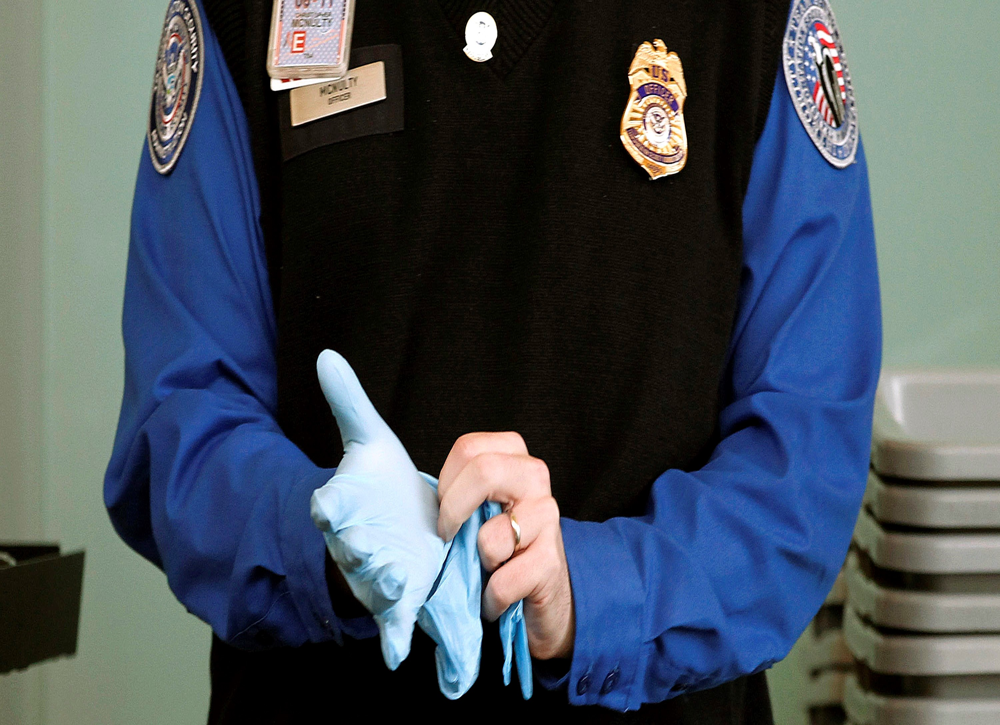

It seems that now someone named “Barack Hussein Obama” will have a good chance of being pulled aside, patted down, and searched in detail merely because of his name. However, while our beloved President has the benefit of Air Force One, millions of people with “funny” and “suspicious” names do not. After 9/11, countless Muslims have been “randomly” selected for extra secondary screenings that usually involve great disrespect and condemnation from airport officials. Muslims are often detained and asked to leave aircrafts for “suspicious” behavior such as normal religious prayers. Millions of people were born to live under harsh discrimination and stereotypes because of the nineteen members that caused the tragic event on September, 11 2001.
American Muslims are discriminated by dress
A Maryland resident flying out of Washington Dulles International Airport was singled out and told to take off her hijab. The TSA then executed a full body search and searched her luggage and belongings for "bomb-making chemicals" when she refused their request. She was told afterwards that a new policy required personnel to pull aside "anyone wearing a head scarf" for search. CAIR National Executive Director Nihad Awad wrote to TSA Administrator and pointed out the hypocricies in this policies, asking why the headdresses of Catholic nuns or orthodox Jews don't trigger similar actions.
Dr. Bazian's own experiences
Dr. Hatem Bazian himself testifying to the discrimination felt at the airports post-9/11 by Muslim Americans. Being one of the earliest to arrive at the airport, yet one of the last to board the plane because of “superfluous” security checks. Similar protocol followed after arriving at the San Francisco International Airport as Dr. Bazian was directed for an extra special secondary screening once again. Is this selection process really “random”?
Even high ranking government officials from other nations feel the result of these new precautions. Mohammad Azam Khan, the Urban development Minister of Uttar Pradesh in India, was detained at Boston airport while he was on his way to present at Harvard University with State Chief Minister Akhilesh Yadav. Khan reportedly claimed that he was only detained because he was a Muslim and sought an apology from the officer. This was not the first time a well known Indian figure was held. In 2012, Bollywood actor Shah Rukh Khan was detained for 2 hours in New York.
While returning from Mecca, Hassan Shibly--traveling with his wife and his infant son--faces harsh interrogation from airport security officials and has his luggage searched in great detail because officials “just had to make sure nothing gets blown up”. In the era after 9/11, Muslims Americans are continually suspected for possibly blowing things up making them subject to these extraneous searches and interrogations while traveling.
Despite added security, some Muslims are not able to fly
Six Muslim scholars, imams, were removed from an aircraft at St. Paul’s International Airport in Minneapolis and humiliated in a very disrespectful way after a passenger secretly passed a note to the flight attendant as a formal warning. It ended with six imams--six scholars--in handcuffs being brought into custody because three of them said their normal evening prayers collectively on the plane.
Britain's Muslim minister
The first Muslim minister of Great Britain demanded more respect from United States authorities after having his luggage specifically checked for explosives at Washington Dulles International Airport, saying he was "deeply disappointed" by his experience at the American airport. Malik experienced a similar incident at the JFK International Airport in New York.